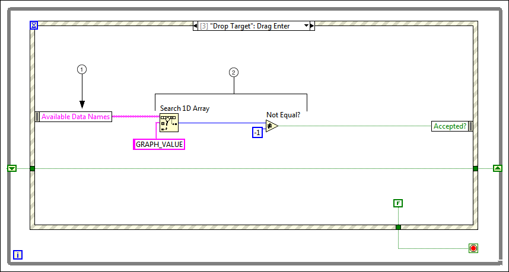

Step 5: Verify that the Drop Target Can Accept the Drag Data
To determine the expected result of a drop operation and to indicate the result to the user, verify that the drop target can accept the drag data. By default, LabVIEW changes the cursor to indicate that if the drop occurs now, the drop target updates with the drag data.
What to Use
Use the following block diagram objects to verify that the drop target can accept the drag data:
Create the following block diagram to verify that the drop target can accept the drag data.

The following list describes important details about the previous block diagram.
The Available Data Names parameter provides an array of strings containing the custom data names you pass to the Start Drag method in the Mouse Leave event.
Search the Available Data Names for the custom data name you want the drop target to accept. If the Search 1D Array function finds the data name, the drag data is acceptable.
 Add
Add  Find
Find